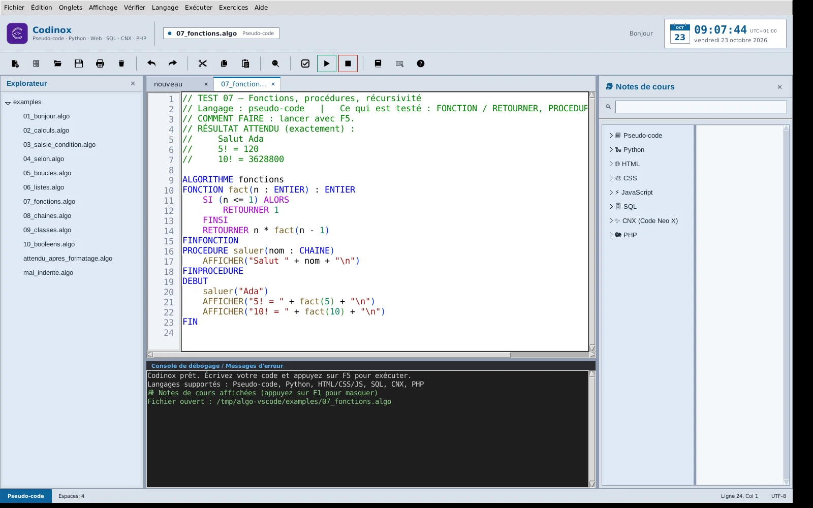
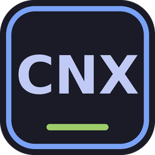
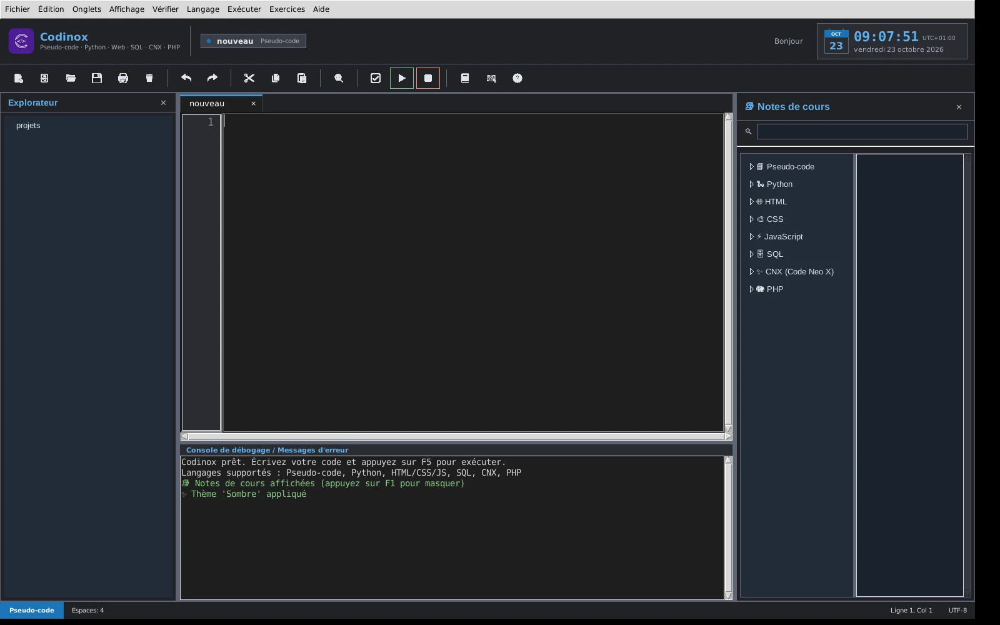
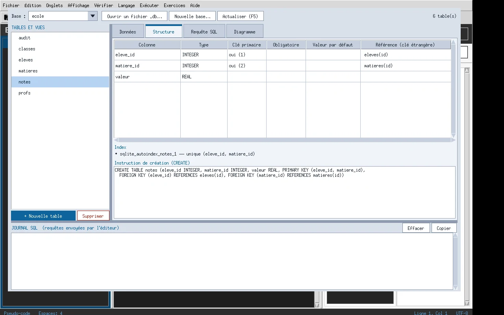
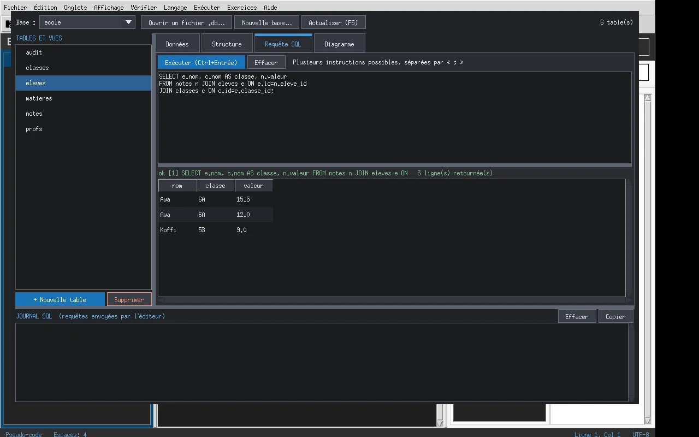
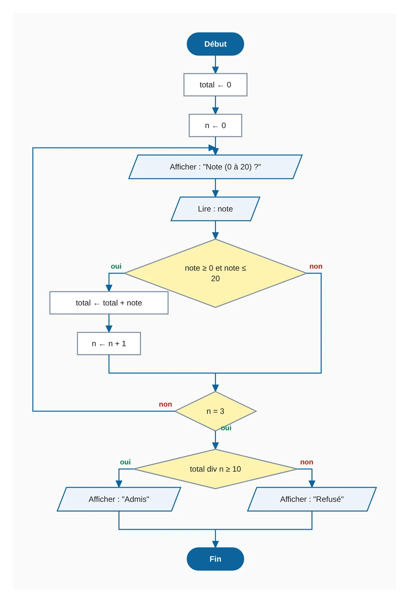
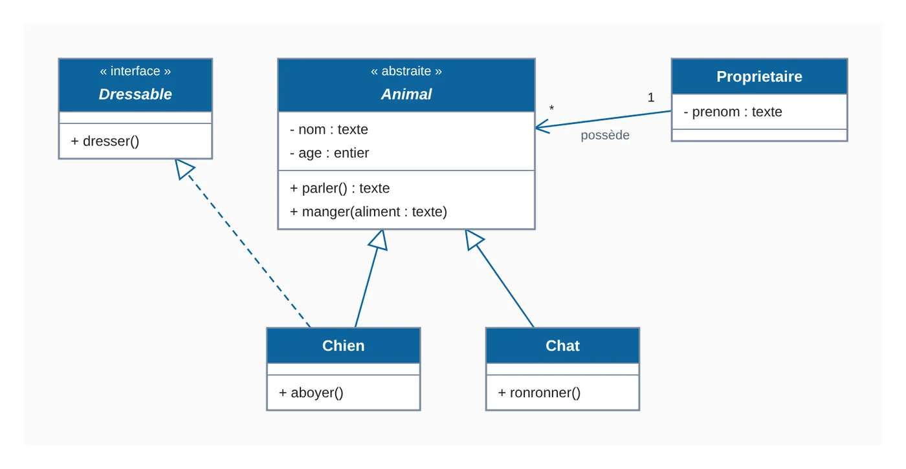
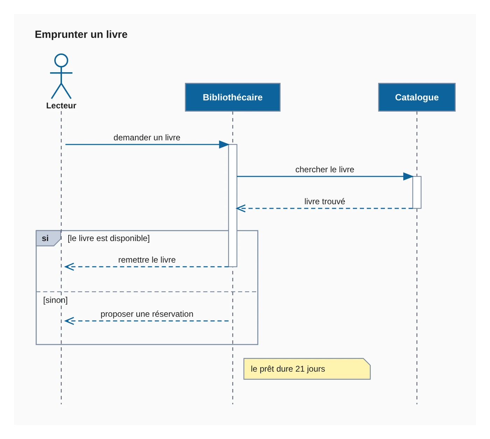

Codinox
Éditeur / EDIPour écrire, vérifier, exécuter et déboguer des programmes, sans rien configurer. Pensé pour l'enseignement de l'algorithmique et de la programmation.
- Pseudo-code
- Python
- HTML / CSS / JS
- SQL
- CNX
- PHP
Codinox est un environnement de programmation clair, avec un débogueur pas à pas, un éditeur de base de données et des messages d'erreur en français. CNX est le langage qui l'accompagne : typé strictement, lisible, et qui explique ses erreurs.
Gratuit · Windows et Linux · toutes les versions

Codinox peut s'utiliser seul. CNX peut aussi s'installer séparément, pour exécuter ses programmes en ligne de commande.
Pour écrire, vérifier, exécuter et déboguer des programmes, sans rien configurer. Pensé pour l'enseignement de l'algorithmique et de la programmation.

Un langage à typage strict, à syntaxe délimitée, dont les erreurs sont expliquées en français avec la correction à appliquer. Il s'exécute dans Codinox ou avec les commandes cnx et cnxw (applications web).
Tout ce qu'il faut pour apprendre dans un seul outil.
Pseudo-code en français, Python, HTML/CSS/JavaScript, SQL, CNX et PHP, avec coloration, aide à la saisie et vérification de la syntaxe.
Avancez ligne par ligne, posez des points d'arrêt et regardez les variables changer pour comprendre ce que fait vraiment le programme.
Structure des tables, données, requêtes SQL et diagramme, dans une fenêtre dédiée.
Notes de cours consultables à côté du code et panneau d'exercices pour s'entraîner sans quitter l'éditeur.
Un terminal intégré et un gestionnaire de paquets pour installer des bibliothèques Python (requests, numpy…) en une commande.
Écrivez votre code (Codinox ou pseudo-code) : l'organigramme se dessine dans une fenêtre dédiée, symboles normalisés, un dessin par fonction, export en SVG.
Diagrammes de classes, de cas d'utilisation et de séquence écrits en français : on tape le texte, le dessin suit. Un squelette de code Python peut en être généré.
Gardez un autre programme sous les yeux, à côté de votre éditeur, sans risquer de le modifier.
Un petit lecteur dans le bandeau du haut pour travailler en musique : liste, boucle, pause et volume.
Une interface soignée, lisible en salle de classe comme le soir.



Deux fenêtres, ouvertes depuis le menu « Exécuter » : l'organigramme se génère à partir du code de l'onglet actif, et les diagrammes UML s'écrivent en texte, en français.



Les images sont des exports des fenêtres de Codinox (couleurs claires).
Les variables sont déclarées avec leur type, et une erreur de type est signalée avec la ligne, l'explication et la façon de la corriger.
Un programme CNX
<cnx> bonjour string : nom; int : age; start nom := "Ada"; age := 36; output("Bonjour ", nom, ", tu as ", age, " ans.\n"); end </cnx> // Résultat : Bonjour Ada, tu as 36 ans.
Une erreur de type, expliquée
<cnx> erreur int : age; start age := "trente"; output(age); end </cnx> Erreur d'exécution (erreur.cnx, ligne 6) : Type incompatible pour 'age' : attendu un entier (int), mais reçu une chaîne ("trente"). Les chaînes ne peuvent pas être converties implicitement en entiers. Pour convertir un texte en nombre, utilisez from_json(texte) […]
Les deux exemples ci-dessus ont été exécutés avec CNX ; le message d'erreur est abrégé.
Choisissez votre projet. Les versions précédentes restent disponibles sur la page des téléchargements.